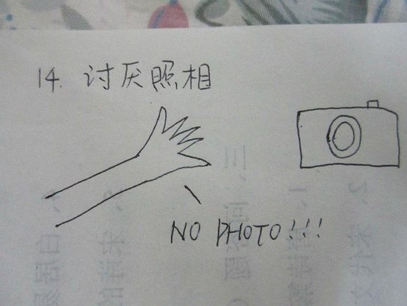

屌丝， 是中国网络文化兴盛后产生的讽刺用语，开始通常用作称呼“矮矬穷”(与“高富帅”或“白富美”相对)的人。其中“屌丝”最显著的特征是穷，房子、车子对于屌丝来说是遥不可及的梦。
本文目录
-什么是屌丝
“屌丝”这么常见和常用的一个词语，真的要认真的回答他到底是什么一时间还真的想不到简单又准确的定义。所以内事还是问度娘吧，百度百科关于”屌丝”的说明竟然洋洋洒洒要上万字了，好吧，原来早就先驱对屌丝的认识这么的深刻。这里就从中挑选出一些精彩的地方来给“屌丝”做一个全方位的扫描吧。
屌丝， 是中国网络文化兴盛后产生的讽刺用语，开始通常用作称呼“矮矬穷”(与“高富帅”或“白富美”相对)的人。其中“屌丝”最显著的特征是穷，房子、车子对于屌丝来说是遥不可及的梦。2012年初，“屌丝”在中国大陆地区广泛流行起来，年轻人群体间的语言文化中更被广泛应用。相对于屌丝最初的定义，如今却已成为一种社会性的自嘲现象。现在你会发现，无论是从表面符合屌丝定义的人，还是和屌丝属性毫不相关的人，无论男女都在争领这一名号。究其原因，是屌丝一词与当代的现实特征实现了完美的合拍。而另一方面，有些人利用屌丝一词“自我设障”，降低成功期望，以此来缓解巨大的社会压力，这部分人当中多数拥有自我意识，自我觉醒才主动归类“屌丝”，所谓资本社会中自暴自弃的无产阶级或忧虑没落的中产阶级。与此同时，“白富美”与“高富帅”一类词也在相当大的程度上被用于讽刺与嘲笑而不是羡慕。有人认为，“屌丝”文化不过是一种社会变革中网络亚文化的崛起，屌丝一词的“兴起”只是人们幽默的自嘲。
在以上的解释中个人认为最精彩的用语是”资本社会中自暴自弃的无产阶级或忧虑没落的中产阶级“，这一表述给屌丝下了一个广义的定义，前者是狭义的真屌丝 “矮矬穷”，在先天外貌气质，个人道德品质和精神修养和经济条件上样样都处于低下水平；而后者则是拥有自我意识的用来缓解社会压力而自嘲的假屌丝，他们可以自称屌丝，但倘若他人说其是”屌丝”则很有可能会因为伤害了其自尊而招来反击。
-屌丝的起源
起源于百度贴吧的雷霆三巨头吧对李毅吧毅丝的恶搞称谓，后被魔兽世界吧会员用于嘲讽毅丝，意为劣等毅丝。李毅吧又叫做D吧(帝吧),随后走进的人就简单的以字母D开头、名为D丝。到后来又有新近的一批人，误把D读成屌,故为现在的”屌丝”。
-屌丝的特征
一篇来自豆瓣的《屌丝的24个特征》用文字加手绘插图的形式很有意思的表达了屌丝的一些常见特征，我们一起来看一看有没有中枪的：
1、身高。168已经非常高了，可以用吊丝极限来形容
2、体重。30KG-40KG（骨瘦如柴） 65-100KG（肥的流油，就0-168身高来说）
3、收入一线城市不超过2000，二线三线不超过1500 （这里本人认为可以提高到一线城市3000，二三线城市2000）

4.手机：华为，NOKIA5230，5233，金立，天宇，山寨机跑马灯
5.长相：2分-4分，（为什么不是0分-4分？）
6.饮料：康师傅系列，脉动，鲜橙多，快活林
7.食品：康师傅系列，鸡蛋灌饼，豆浆，油条，包子，馒头，牛肉面，回锅肉炒饭
8.头型：平头，刘海很长的**头型或者奇形怪状的头型，碎发
8.衣服鞋子：真维斯，李宁，德尔惠，乔丹，361度，地摊货，淘宝便宜货，
9.在现实生活中屡屡受挫，在网络就装牛逼，不管政治，医学，体育，天文都是“专家”并且爱说：我以前以前怎么怎么样 OR 我在XX干了XX年
10.胆小猥琐，看见7分女就脸红，不敢说话，看见8分9点就想舔人家脚，用人家丝袜和鞋子撸
11.平时当着同学的面说XX女的怎么丑怎么垃圾，晚上就对着人家照片撸。
12.无女友，将来也不会有的搓B
13.坐位置一定要选在后面，迟到了总想从后门进，害怕高帅富和木耳的眼光。
14.讨厌别人用照相机照自己，因为一副搓B相

15.不敢进入高档的美发屋和装修华丽的地方，进个星巴克手都不知道放哪好。
16.在生活中充当小丑这一角色。
忘了画在纸上了、、、现在也不会画 比较难表现屌丝那种丑态百出的样子
17.不敢穿颜色鲜艳的衣服，也不敢穿特别潮的衣服和饰品。
18.喜欢看小说，特别是YY小说休闲小说。经常把自己幻想成小说或者电影里的英雄，身边木耳环绕。
19.没有特长，平平淡淡。
20.不爱运动，要么瘦的和狗一样，要么肥的坐下肚子的肉都要堆三层。
21.和木耳聊QQ，总要聊一句关一次对话框，害怕“正在输入”突然不见了，关了之后心里又很急切的看着右下角，。
22.自己觉得自己最牛逼，先知先觉，大智大勇，别人都是2B，看不透的SB，其实自己才是SB。
23.历史政治考不及格，还经常到网上来侃历史和政治，仿佛自己是学者。
24.“美国梦”（留学，出国，移民），只能是做梦。
从这个帖子的转发和分享次数基本能看出来大多数民众眼里的屌丝还真当就差不多是这个样子了。
-为什么想要脱离屌丝队伍
既然要脱离屌丝，那么首先得看清自己是不是的确一屌丝，要是的话又是两种屌丝中的哪一种，是自暴自弃的无产阶级还是忧虑没落的中产阶级？是”矮矬穷”真屌丝还是为了缓解压力而自嘲的假屌丝？
我自己先来对号入个座，由于平时以屌丝自嘲的同时还拉拢身边的小伙伴一起自嘲，建的微信群的名字也叫”XX屌丝小分队”，所以我大概是属于后者，中产不中产这个另外评判，倒是真的是会感到忧虑和没落，也是通过自称屌丝来让自己心里感觉舒服一点，无形中降低了自己对成功的期望，成功了感觉会更好，失败的话也不会感觉太失落。
之所以想要脱离屌丝的队伍，是因为看到了屌丝队伍消极落后的方方面面，以及看到了和屌丝相对应的”高富帅、白富美”行列中积极进步的点点滴滴。让我们来看一看两者的区别:
关于人生
屌丝：很少想到如何去赚钱和如何才能赚到钱，认为自己一辈子就该这样，不相信会有什么改变。
高富帅：骨子里就深信自己生下来要成为富有而又涵养的人，他们有赚钱意识，又有文化追求，也就是有很高的人生自我追求。这已是他血液里的东西，即使遇到一时的条件限制，也静观机会再度出击，坚持到底。
交际圈子
屌丝：喜欢和低俗人群打交道，屌丝的圈子大多是屌丝，也没有任何机会与高富帅群体接触，久而久之，心态成了屌丝的心态，思维成了屌丝的思维，做出来的事也就是屌丝的模式。 大家每天谈论着街头巷尾的琐碎事，看上去好像口才提升了，很有影响力，但他们的眼界也就渐渐囿于这样的琐事，雄心壮志被消磨于他们所处的圈子里面。
高富帅：最好的状态是交上志趣相投而又能互相帮助的朋友，如果状态没那么理想。则两者选一。由于自身有良好的经济基础和文化修养，交朋友的心态不会太功利，萍水相逢是缘分，为事业共同奋斗是乐趣，但绝不会和喜欢八卦、庸碌的屌丝瞎混浪费时间。
时间
屌丝：生活在社会底层，为生存苦苦挣扎，经常是一刻的闲暇时间都没有，过于忙碌的工作挤压了他们的工作之余的时间。现代社会的分工常常造成每个人在工作中 只能负责特定领域的职能，久之会妨碍个人的发展。一个人有着过多的时间是无所事事，但是一个人如果没有充足的闲暇时间，那么也很难突破现代社会分工造就人 的“螺丝钉”化的局限。况且，屌丝所接触的群体质量本身就不高，而又没有很好的品位和视野（注意视野是指知识视野，而非见闻，屌丝通常乐于了解和传播各类 谣言和花边新闻，以为见多识广，视野开阔），对于真正有品位和视野的人，又心理忌恨得发慌，嘴上还要骂人家会装，如此一来，屌丝进一步失去自我提升的机 会，永远在社会底层煎熬。
高富帅：通常有着良好的经济基础，因此有充足的闲暇时间进行各种进修、阅读、鉴赏艺术等休闲活动，也就是所谓的“有闲阶级”。高富帅从事这类活动，经常是 不带功利目的的，这是真正意义的有闲阶级的生活方式，这种生活方式又提升了他们的品位和视野，继续晋升到更高阶层。而屌丝由于生活在社会底层，每一项社会 活动都是为了生存，自然带着很强的功利目的，但是过强的功利性反而又妨碍了他们自身的素质和能力的提升。
归属感
屌丝：是颗螺丝钉。屌丝因为自身的卑微，缺少安全感，就只能依附于一个群体（通常也是屌丝群体）。久之他们的视野、品位、能力都收到这个群体的影响，变得 更低俗、庸碌。对于屌丝来说，在一个著名的企业里稳定地工作几十年，由普通员工一直干到高级主管，那完全是遥不可及的事情，更别说要当什么老板。
高富帅：那些群体的领导者通常都是高富帅，通常由于有良好的经济基础，独立性强，无需依附某个群体（当然更不会加入屌丝群体），但是也不排除加入群体。因 为对于高富帅来说，群体和个人本来就是双赢的关系，如果是能帮助自己发展的群体，当然可以加入其中，为之付出努力，群体的发展反过来又帮助个人发展，形成 良性循环；而如果是阻碍个人发展的群体，那么会毫不犹豫将其排除在自己的工作和生活圈之外，以免堕落为屌丝。
激情
屌丝：没有激情。他总是按部就班，很难出大错，也绝不会做最好。没有激情就无法兴奋，就不可能全心全意投入工作，大部分的屌丝不能说没有激情，但他的激情 总是消耗在低级的事情上：商店打折了，他们会兴奋；电视里主角胜利了，他们跟着激动不已（将剧情当现实）；听到新闻或者街头巷尾传来坏消息，他们幸灾乐 祸；屌丝有的只是一种情绪。
高富帅：“燕雀安知鸿鹄之志？”“王侯将相，宁有种乎？”有这样的激情，屌丝终将不是屌丝！激情是一种天性，是生命力的象征，有了激情，才有了灵感的火花，才有了鲜明的个性，才有了贯彻到底的决心和勇气，也才有了解决问题的魅力和方法。
自信
屌丝：屌丝的自信要通过“武装”到牙齿，不过他们的武装方式不是自我修炼，而是在贬损他人，获得虚无的“强大”感觉。可想而知，这样武装起来的“牙齿”用来咬人，又能真的咬上几口呢，屌丝还不照样是屌丝，不会有任何进步。
高富帅：李嘉诚在谈到他的经营秘诀时说：“其实也没什么特别的，光景好时，决不过分乐观；光景不好时，也不过度悲观”。其实就是一种高富帅特有的自信，从自己身上找到克服困难的力量，不断修炼自身，让心境不被外力所左右
习惯
屌丝：有个故事，一个高富帅送给屌丝一头牛。屌丝满怀希望开始奋斗。可牛要吃草，人要吃饭，日子很难。屌丝于是把牛卖了，买了几只羊，吃了一只，剩下的来 生小羊。可小羊迟迟没有生下来，日子又艰难了。屌丝又把羊卖了，买成鸡。想让鸡生蛋赚钱为生，但是日子并没有改变，最后屌丝把鸡也杀了，屌丝的理想彻底崩 溃了。这就是屌丝的习惯。
高富帅：据一个投资专家说，高富帅成功秘诀就是：没钱时，不管多困难，也不要动用投资和积蓄，压力使你找到赚钱的新方法，帮你还清账单。这是个好习惯。意识支配行为，行为养成习惯，习惯决定成功。
娱乐活动
屌丝：在家看电视，或在网上关注乱七八糟没有营养的网站，看完也一无所获，没得到什么启发，就看个乐子。
高富帅：阅读有营养的书籍、鉴赏音乐等修养身心的活动，或者打高尔夫球，游泳等高消费又怡情的项目。
消费花钱
屌丝：买名牌是为了体验满足感，最喜欢试验刚出来的流行时尚产品，跟随大众和流行趋势。
高富帅：买名牌是为了节省挑选细节的时间，寻找价格和质量的最优组合，既不可能以高价买低质量产品，也不会低价买低质量的产品。
看到了上述这些区别，如果还有激情，还拥有自我意识，那么还有什么理由不去摆脱这些屌丝气质从而可以从屌丝的队伍里脱离出来呢？
-如何脱离屌丝队伍
摆脱了身上的屌丝气质就能够脱离屌丝的队伍，前段时间在朋友圈不是火爆了 一阵”主要是看气质”嘛？那么如何才能提升自己的气质，甩掉屌丝气呢？我认为还是应该从物质文明和精神文明两方面着手，也就是外在表现和内在修养。
-外在
1.从头开始：剪一个合适的发型，最好能找到一个适合自己的理发店和发型师，即使没有，也要有一个看起来清爽精神的发型。
2.衣着外貌：注意合理的服饰搭配，假名牌万万穿不得，你可以不穿名牌，舒适自然美观就好。
3.身形：抬头挺胸，但是不要太过僵硬。坐的时候不要翘二郎腿，不要翘椅子，抖腿。走要精神，不快不慢，步子迈开，不要碎碎的小家子气，也不要扭来扭去。
4.居家：保持住所的干净整洁，为了你美好的生活，就算你天生就是个懒骨头，还是请尽量勤快起来吧。或者，雇个清洁工、收买个处女座朋友、寻求家政服务的帮助。无论如何，总之得定期做做卫生。
5.谈吐： 控制自己的语言，不要有脏话或轻佻佻的话；还要控制好语速，太快的语速压不住场，没有气度；再者要控制好语调，不要太高，会显得聒噪。
6.笑容：一个迷人的笑容可以让别人对你更亲近，可以给自己减压，可以让自己自信起来，在任何时候都提醒自己尽量保持微笑，让微笑成为和种习惯。
看上去简简单单的几点，对于准备踏出第一步开始改变的屌丝来说也并不容易做了，或是一时做到了也不容易坚持。所谓修身，齐家貌似就能在上述几点里体现出来，如果让这些都融入到平时的生活中成为一种习惯的话，起码，从外表看，您已经不再是那位屌丝了。
-内在
1. 多读书，提高自己的认知。多读一些有内涵的书，而不是只看一些网络小说整天沉迷在屌丝逆袭的YY世界中，从书中挖掘那些有价值的精华内容来战胜精神上遇到的困难和挫折，从书中学习更好的为人处事的哲学，来指引日常的行为和规范。
2. 能自省，把控自己的情绪。读的书多了并不是用来卖弄的，而是要竖立自我意思，学会独立思考，形成自己的判断，遇事要学会淡定，控制好自己的各种情绪，处理好自己的情感，要是能做到吾日三省吾身，遇事喜怒不形于色就是比较高的境界了，所谓不以物喜，不以己悲。
3. 少抱怨，坚定自己的信念。竖立自我的意识需要的是积极的，正面的态度，每当想要抱怨的时候可以回头再作一番自省，不要被负面的因素给放倒，自己的信念必须足够的坚定，相信老天是公平的，自已心态放稳了，事情做好了，好运自然来。有病方为贵，无伤不是奇，格中如去病，福禄总相随。
4. 勤锻炼，强健自己的身心。锻炼其实不只是强身健体，能一直坚持锻炼的人做事情是有一定的毅力的。改变可以从迈开腿开始，并不一定需要高档的健身环境，每天可以坚持跑跑步就可以了。都说激情靠荷尔蒙，快乐靠多巴胺，而运动则可以产生多巴胺。
5.会包容，增加自己的气度。包容心，是当下社会非常欠缺的，人心越来越浮躁，居家邻里不和，外出争吵路怒，自私自利的风气越发盛行。因此要保持一颗包容的心实属不易，需要用同理心来对待他人，处理事情的时候尽量的多站在对方立场考虑考虑或许眼前就会开朗一些。
6.知感恩，不忘自己的初心。要学会感恩，保持善良的心态，要知足才能常乐，有时候吃亏也是一种福气，感谢一切的一切，正是你所见所感的所有造就了当下的你，当下有时虽有不如意，但是要知道任何阶段和任何阶层的人都是比上不足比下余的，我们所要做的就是活得更好。正所谓不择手段非好汉，不忘初心真英雄。
好了，以上这些就是自己关于屌丝的一点认识，和如何摆脱屌丝气脱离屌丝群的一些看法，不求面面俱到，但求客观真诚。最后要么再补充一点就是如果下定决心不再做一名屌丝，那么就从现在起放弃使用这个词语吧，不管是用在自己身上还是他人身上。只要有激情，想改变，求进步，从一些小地方慢慢开始做起，过一段时候再回头看看，会发现自己有可能已经脱胎换骨了。